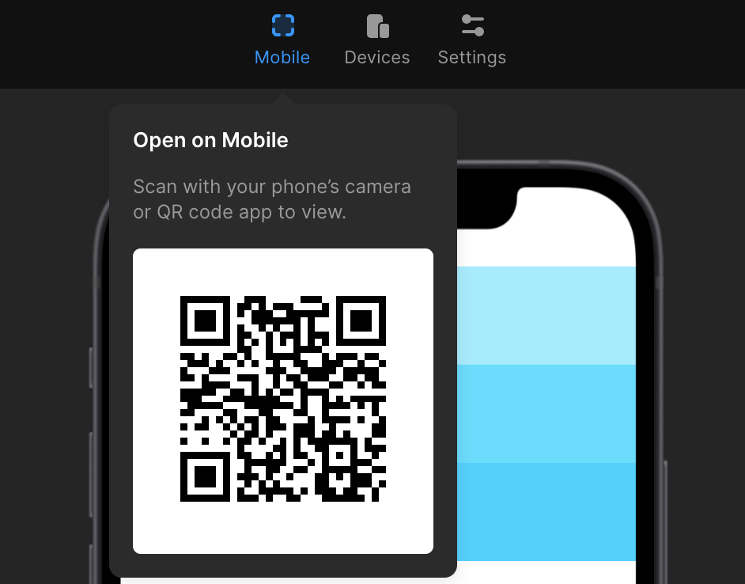

Framer is still alive and well… and it's a game-changer
A love letter to my prototyping tool of choice.
Earlier, this week, this post came across my feed: “Framer is Dead.”
Impossible. I've been using it non-stop for the past month.
Sadly, this post has gotten some traction, and I've seen it pop-up on several round-ups.
Two weeks ago, Framer launched a new home page design and Smart Components, with Variants coming out of Beta. Looking at new features alone, it's very much alive and well.
The leading case this post made was that Framer was at fault for moving toward React. In doing so, it's alienating designers that aren't code-savvy. Or, on the opposite end of the spectrum, over-empowering UX engineers who over-value the code.
Then, as if to drive the nail in the coffin: “Framer used to be about playing around. Now it's about building things.” — Frankly, I'm not sure why “playing around” and “building things” have to be mutually exclusive.
Are we talking about the same product?
My Story
Before Framer, we were using Invision for prototyping. At best, this experience felt clunky. I was taking static images, creating hot spots, and linking them together. If anything, it demonstrated how screens were linked together. But, during pitches, there was still a considerable amount of hand waving and, “Imagine this. The user will scroll down, and this will happen…”
While this worked for some clients, others still had trouble making that leap, however big or small. There was even a fair amount of redesigning once developers got involved. “Oh, I didn't realize that's what you meant.”
Priming
In November (2020), I started working with a new client, designing a native application. About the same time, I was listening to the Design Details Podcast, Episode 377: Future-Proof Designer. One of the skills they talked about was prototyping. The best designers at prototyping are the best communicators.
The best designers at prototyping are the best communicators.
Noted.
At that moment, I knew that the most effective way to get stakeholders on board was to create a prototype true to the app's experience.
That's the key: an app is an experience.
When you're designing a native application, you're pushing pixels on a laptop or a desktop. The point is: it's a different medium; it's a different device than how the end-user will experience the final product.
I wanted to create a prototype that felt real. They could pull it up on their mobile device and feel like they were using an application — no smoke and mirrors. No handwaving. No magic.
Enter Framer
I've known about Framer for years but never explored it as an option. This project seemed like the perfect opportunity and the perfect fit.
I've been blown away.
For the no-coders. Framer is for you.
You can import your designs directly from Figma or Sketch or design directly within Framer.
It has plenty of built-in, interactive components that you can use to build a prototype without writing a line of code.

Insert Menu within Framer
There's an entire library of third-party components, at your disposal.
Framer Community Plugins
With the release of Variants and Smart Components, the sky's the limit.

For the code-savvy. Framer is for you.
In Framer, you can code custom React components(!!) and use them alongside designed components. This is mind-blowing to me.
I can play with interactions while building something real.
The sky truly is the limit.
My Sweet Spot: How Our Team is Using Framer
I recognize that my skill set is different. I design and write code. Not all designers code, and not all developers design — and that's perfectly fine. I've found Framer blends both worlds in a way that I've never seen in an application.
Figma
I've done all the initial design work within Figma. I have more experience there, and it's allowed me to create multiple drafts and experiment in design without muddying my prototype in Framer.

Once the design is cleaned up, I have a page in Figma that I use specifically for a hand-off. This keeps unwanted elements out of Framer
Framer Desktop
You can do everything within the browser, through Framer Web. In fact, Framer Web has more features than Framer Desktop.
However, with Framer Desktop, I can directly access the code folder. Meaning, I can write custom ****React components within VS Code, my choice IDE.
I also have access to the package.json file to install npm packages, like any other project. This only extends my toolset, giving me access to packages like Styled Components and date-fns.
All code is committed to version control, either GitHub or BitBucket. This creates a better workflow for me, but also gives easy access to the engineers on the project.
JSON Data Files
I've created JSON files that outline the data. The state of the app and its design change based on the data passed in.
What does it look like to have 1 notification vs. 12? What happens when the user has overdue payments? What does the app look like when the user is in Phase 1 vs. Phase 3 of the program? Instead of creating prototypes for each use case, I update the data passed in.
We can always change the shape of the data in my JSON file, but it does have the potential to mirror a potential GraphQL query.
Sharing the Project
Once I have a working prototype, I'll upload the project to Framer Web. This makes it easy to generate share links. Even better, if someone has the Framer Preview App on their mobile device, I can generate a QR Code that allows them to interact with the prototype on their phone, just like the final native app.
Generating a QR Code for Framer Preview App
Tight Developer Schedule
As with most projects, this one has a tight developer schedule. One of the biggest perks that we've found is that Framer has gotten us to the end result faster. I'm able to hand over the React components I've created with minimal refactoring.
While this process might sound more like building instead of experimenting, I didn't list in detail all the “play” that is woven throughout the entire process.
Framer is very much alive and well.